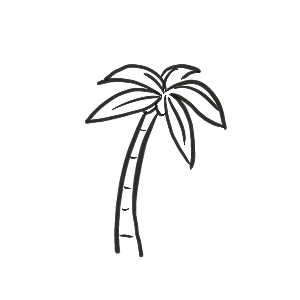

Raluca's Californian Adventure 
I spent July 2022 in California, working in Redlands and travelling from San Diego to San Francisco. This story map shows the highlights of my journey.
San Diego
After working in Redlands for 2 weeks, I got to spend a week in San Diego helping out at Esri's User Conference. I didn't get to do much visiting, but I really enjoyed hanging out at the Coronado Island in my free time. In front of the conference center you can take a boat to the island and if you're lucky you can catch a nice sunset, a beautiful concert and spectacular views of downtown San Diego.
Train trip from San Diego to Los Angeles
After one week in San Diego I travelled to Los Angeles to meet my friend Josefin and start our little road trip. I had some issues with my credit card so I couldn't rent a car. So I did the next best thing, I took the Pacific Surfliner. And it was an amazing experience, I couldn't believe how close we were to the beach. And trains in the US are luxury, you have so much space for legs and luggage.
Los Angeles
While in Los Angeles, we tried our best to do the touristy things tourists do. We were walking the Walk of Fame, went fancy on Rodeo Drive, did a little walking up to Griffith Observatory, played beach volleyball at Santa Monica beach, rode our bikes to Venice Beach and we even went for a Frank Sinatra tribute concert at the Hollywood Bowl (and missed the first part of the concert because we got stuck in traffic and couldn't find parking hehe).
The beaches
Laguna Beach
A bit south of Los Angeles Laguna beach is a beautiful, exotic beach.
Zuma Beach
Malibu? Malibu. I love the beaches in California, so wide and empty, an awesome place to relax. At Zuma beach we were lucky to see dolphins, but unfortunately they were camera shy so we couldn't get a nice movie of their jumps :)
Santa Barbara Beach
Santa Barbara is an awesome little town by the beach. We rode bikes, went to the bookshop, chilled at the beach, did yoga on a rooftop by the beach (with the awesome Shannon) and we ate really good food.
Pismo Beach
What happens in Pismo beach, stays in Pismo beach... well, nothing exciting happened, except that we found out that Bugs Bunny likes to make holidays here.
Big Sur
We did a little hike here. It was good to get the blood pumping after all that chilling at the beach :) but guess what, in the middle of the hike we ended up by a beautiful beach, so we were chilling there some more hehe
Carmel by the Sea
This charming little town seems to have very strict urban planning rules and this helped it preserve its authenticity over the years. In San Francisco I met someone who grew up in Carmel and she said: "Nothing changed over there in the past 40 years". And I mean look at those photos, I think it's awesome that nothing changed, it's beautiful!
San Francisco
My stay in San Francisco started with the 5k run in the 45th SF Marathon. I find these 5k runs super fun, not that much to run and the atmosphere is always nice. It started at 7:30, so by 8:00 I was already pumped up with adrenaline and ready to start the day.
Later in the morning I joined a meetup to learn Spanish and met a lovely bunch of people, I totally recommend hanging out with them if you live in San Francisco and you're learning Spanish :) Later on I rented a bike and was cruising around in the city.
In the afternoon we visited Alcatraz, a former military prison. It was very interesting to learn about the prisoners' lives and what they went through while imprisoned there.
Muir woods
We didn't get much more up north to see the redwood trees, so we went close by San Francisco to Muir Woods National Monument. A friend of mine recommended this park and I was thankful because it's really beautiful.
And... that's all folks!